Pitprops from R package elsticnet "All Sparse PCA Models Are Wrong, But Some Are Useful. Part III: model interpretation"
Submitted to Chemometrics and Intelligent Laboratory Systems. 2025
Dependencies: MEDA Toolbox v1.8 at https://github.com/codaslab/MEDA-Toolbox SPASM Toolbox at https://www2.imm.dtu.dk/projects/spasm
coded by: Jose Camacho Paez (josecamacho@ugr.es) last modification: 31/Mar/2025
Copyright (C) 2025 University of Granada, Granada
This program is free software: you can redistribute it and/or modify it under the terms of the GNU General Public License as published by the Free Software Foundation, either version 3 of the License, or (at your option) any later version.
This program is distributed in the hope that it will be useful, but WITHOUT ANY WARRANTY; without even the implied warranty of MERCHANTABILITY or FITNESS FOR A PARTICULAR PURPOSE. See the GNU General Public License for more details.
You should have received a copy of the GNU General Public License along with this program. If not, see http://www.gnu.org/licenses/.
Contents
- Pitprops data from R package elsticnet
- Zou Hui, Hastie Trevor, Tibshirani Robert. Sparse Principal Component
- Compute variance estimates
- PEV vs sparsity: SPCA-Z LV1
- Plot scores for 1LV with 13, 5 and 1 NZE
- Several plots for 1LV with 5 NZE
- PEV vs sparsity: SPCA-Z multi-component
- Plot the razor plot
- Plot the razor plot per component
- PEV vs sparsity: SPCA-Z multi-component, truncated search
- Plot the truncated razor plot
- Plot the truncated razor plot per component
- Select ridge penalty: 0
- Visualize multi-model selected with 6 components with two non-zero weights each.
Pitprops data from R package elsticnet
var_l = {'topdiam' 'length' 'moist' 'testsg' 'ovensg' 'ringtop' 'ringbut' 'bowmax' 'bowdist' 'whorls' 'clear' 'knots' 'diaknot'};
XX=[ 1.000 0.954 0.364 0.342 -0.129 0.313 0.496 0.424 0.592 0.545 0.084 -0.019 0.134
0.954 1.000 0.297 0.284 -0.118 0.291 0.503 0.419 0.648 0.569 0.076 -0.036 0.144
0.364 0.297 1.000 0.882 -0.148 0.153 -0.029 -0.054 0.125 -0.081 0.162 0.220 0.126
0.342 0.284 0.882 1.000 0.220 0.381 0.174 -0.059 0.137 -0.014 0.097 0.169 0.015
-0.129 -0.118 -0.148 0.220 1.000 0.364 0.296 0.004 -0.039 0.037 -0.091 -0.145 -0.208
0.313 0.291 0.153 0.381 0.364 1.000 0.813 0.090 0.211 0.274 -0.036 0.024 -0.329
0.496 0.503 -0.029 0.174 0.296 0.813 1.000 0.372 0.465 0.679 -0.113 -0.232 -0.424
0.424 0.419 -0.054 -0.059 0.004 0.090 0.372 1.000 0.482 0.557 0.061 -0.357 -0.202
0.592 0.648 0.125 0.137 -0.039 0.211 0.465 0.482 1.000 0.526 0.085 -0.127 -0.076
0.545 0.569 -0.081 -0.014 0.037 0.274 0.679 0.557 0.526 1.000 -0.319 -0.368 -0.291
0.084 0.076 0.162 0.097 -0.091 -0.036 -0.113 0.061 0.085 -0.319 1.000 0.029 0.007
-0.019 -0.036 0.220 0.169 -0.145 0.024 -0.232 -0.357 -0.127 -0.368 0.029 1.000 0.184
0.134 0.144 0.126 0.015 -0.208 -0.329 -0.424 -0.202 -0.076 -0.291 0.007 0.184 1.000];
clc
Zou Hui, Hastie Trevor, Tibshirani Robert. Sparse Principal Component
Analysis. Journal of Computational and Graphical Statistics. 2006;15:265–286.
v = [ -0.4773598 0.00000000 0.00000000 0 0 0
-0.4758876 0.00000000 0.00000000 0 0 0
0.0000000 0.78471386 0.00000000 0 0 0
0.0000000 0.61935898 0.00000000 0 0 0
0.1765675 0.00000000 0.64065264 0 0 0
0.0000000 0.00000000 0.58900859 0 0 0
-0.2504731 0.00000000 0.49233189 0 0 0
-0.3440474 -0.02099748 0.00000000 0 0 0
-0.4163614 0.00000000 0.00000000 0 0 0
-0.4000254 0.00000000 0.00000000 0 0 0
0.0000000 0.00000000 0.00000000 -1 0 0
0.0000000 0.01333114 0.00000000 0 -1 0
0.0000000 0.00000000 -0.01556891 0 0 1];
Compute variance estimates
% SPCA-Z: Compute variance estimates only based on P [Vg Dg] = eig(XX); X = Vg*sqrt(abs(Dg))*Vg'; Z = X*v; [Q,R] = qr(Z); 100*diag(R(1:6,:).^2)/trace(XX) totV = 100*sum(diag(R(1:6,:).^2))/trace(XX) % SPCA-Z: Compute variance estimates based on P and Q b=v; [u,s,v]=svd(XX*b,0); a=u*v'; Z = X*b*inv(a'*b); pev = zeros(6,1); for i=1:6 pev(i) = trace(a(:,i)*Z(:,i)'*Z(:,i)*a(:,i)')/trace(XX); end 100*pev totV = 100*trace(a*Z'*Z*a')/trace(XX) % Compute variance estimates in PCA totVPCA6 = sort(diag(Dg),'descend'); pcs=100*totVPCA6(1:6)/trace(XX) totVPCA6 = 100*sum(totVPCA6(1:6))/trace(XX)
ans =
28.0349
13.9655
13.2982
7.4450
6.8019
6.2273
totV =
75.7728
ans =
28.0948
15.5257
15.5573
8.5550
8.6217
8.8288
totV =
85.1833
pcs =
32.4510
18.2931
14.4479
8.5338
7.0004
6.2724
totVPCA6 =
86.9985
PEV vs sparsity: SPCA-Z LV1
NzeM = size(XX,1); [Vg Dg] = eig(XX); X = Vg*sqrt(abs(Dg))*Vg'; PEVp = []; PEVpq = []; for vec = NzeM:-1:1 p = spca_zouhastie([], XX, 1, 0, -vec); [u,s,v]=svd(XX*p,0); q=u*v'; PEVp(vec) = 1 - sum(sum((X - X*p*p').^2))/sum(sum(X.^2)); PEVpq(vec) = 1 - sum(sum((X - X*p*inv(q'*p)*q').^2))/sum(sum(X.^2)); end f = figure; plot([1 NzeM],ones(1,2)*pcs(1)/100,'--') hold on plot(1:NzeM,[PEVpq' PEVp'],'o-'), plot([7 7],[0 0.4],'-.'), plot([5 5],[0 0.4],'--'), a=get(f,'Children'); set(a(1),'FontSize',14) ylabel('PEV','FontSize',16), xlabel('Non-zero elements','FontSize',16), axis([1,NzeM,0.0,0.4]) legend({'PC_1','PEV_{pq}','PEV_{p}','Zou et al.','Ours'},'Location','southeast') legend('boxoff') saveas(gcf,'Figures/PEV'); saveas(gcf,'Figures/PEV.eps','epsc');
Plot scores for 1LV with 13, 5 and 1 NZE
p = spca_zouhastie([], XX, 1, 0, -13); [u,s,v]=svd(XX*p,0); q=u*v'; plotScatter([X*p,X*q],'XYLabel',{'Xp','Xq'}); hold on plot([-1 0.4],[-1 0.4],'k--') saveas(gcf,'Figures/t13'); saveas(gcf,'Figures/t13.eps','epsc'); p = spca_zouhastie([], XX, 1, 0, -5); [u,s,v]=svd(XX*p,0); q=u*v'; plotScatter([X*p,X*q],'XYLabel',{'Xp','Xq'}); hold on plot([-1 0.2],[-1 0.2],'k--') saveas(gcf,'Figures/t5'); saveas(gcf,'Figures/t5.eps','epsc'); p = spca_zouhastie([], XX, 1, 0, -1); [u,s,v]=svd(XX*p,0); q=u*v'; plotScatter([X*p,X*q],'XYLabel',{'Xp','Xq'}); hold on plot([-1 0.2],[-1 0.2],'k--') saveas(gcf,'Figures/t1'); saveas(gcf,'Figures/t1.eps','epsc');
Several plots for 1LV with 5 NZE
p = spca_zouhastie([], XX, 1, 0, -5); [u,s,v]=svd(XX*p,0); q=u*v'; r = q*inv(p'*q); plotVec(-p,'XYLabel',{'Variables','Sparse weights (p)'}); axis([.5 13.5 -.1 1]) saveas(gcf,'Figures/p'); saveas(gcf,'Figures/p.eps','epsc'); plotVec(-q,'XYLabel',{'Variables','Auxiliary loadings (q)'}); axis([.5 13.5 -.1 1]) saveas(gcf,'Figures/q'); saveas(gcf,'Figures/q.eps','epsc'); plotVec(-r,'XYLabel',{'Variables','Regressors (r)'}); axis([.5 13.5 -.1 1]) saveas(gcf,'Figures/r'); saveas(gcf,'Figures/r.eps','epsc'); f = plotMap([X*X'],'VarsLabel',var_l); a = get(f,'Children'); set(a(2),'XTickLabelRotation',45); saveas(gcf,'Figures/map'); saveas(gcf,'Figures/map.eps','epsc'); f = plotMap([r*p'*X'*X*p*r'],'VarsLabel',var_l); a = get(f,'Children'); set(a(2),'XTickLabelRotation',45); saveas(gcf,'Figures/map2'); saveas(gcf,'Figures/map2.eps','epsc');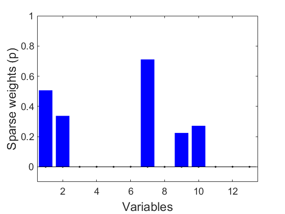 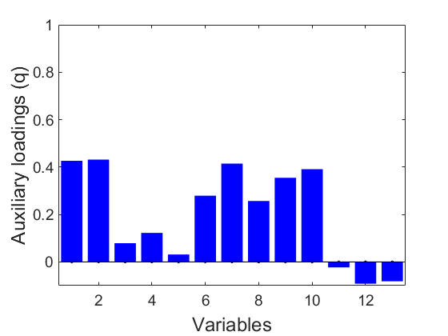 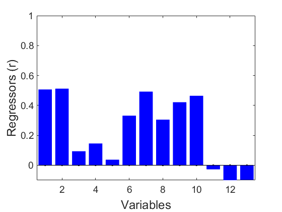 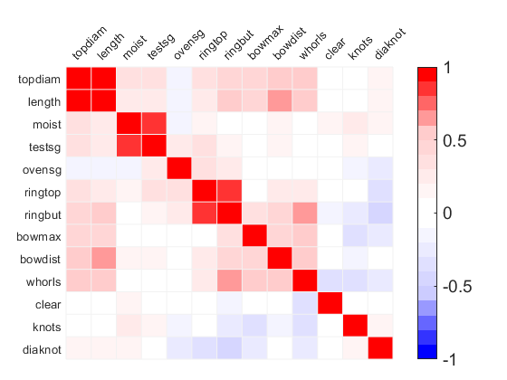
PEV vs sparsity: SPCA-Z multi-component
clc PEVpq = []; fp = []; pcs = 1:6; ridge = [0 Inf]; tic for j1=1:13 for j2= 1:j1 for j3= 1:j2 for j4= 1:j3 for j5= 1:j4 for j6= 1:j5 vec = [j1 j2 j3 j4 j5 j6]; for j=1:length(ridge) for i=1:length(pcs) p = spca_zouhastie([], XX, pcs(i), ridge(j), -vec(1:pcs(i))); [u,s,v]=svd(XX*p,0); q=u*v'; fp(i,j,j1,j2,j3,j4,j5,j6) = length(find(p.^2)) - length(find(sum(p.^2,1))); PEVpq(i,j,j1,j2,j3,j4,j5,j6) = 1 - sum(sum((X - X*p*inv(q'*p)*q').^2))/sum(sum(X.^2)); end end end end end end end end total_time=toc close all save search_pitpropos
total_time = 1.1506e+04
Plot the razor plot
ufp = unique(fp); PEVfp = []; for i=1:length(ufp) ind = find(fp == ufp(i)); mind = find(PEVpq(ind)==max(PEVpq(ind)),1); PEVfp(i) = PEVpq(ind(mind)); end val = num2cell(ufp); val{end+1} = 'Ref'; f = plotVec([PEVfp totVPCA6/100],'ObsClass',[2*ones(1,length(PEVfp)) 1]); legend('off') ylabel('Explained variance PEV_{pq}') xlabel('f') a=get(f,'Children'); saveas(gcf,'Figures/razor'); saveas(gcf,'Figures/razor.eps','epsc');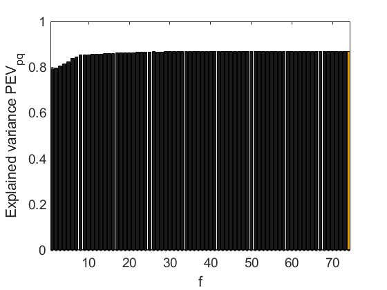
Plot the razor plot per component
ufp = unique(fp); PEVfp2D = []; for i=1:length(ufp) for j = pcs ind = find(fp(j,:) == ufp(i)); mind = find(PEVpq(j,ind)==max(PEVpq(j,ind)),1); if ~isempty(mind) PEVfp2D(j,i) = PEVpq(j,ind(mind)); end end end PEVfp2D(find(PEVfp2D==0)) = nan; figure surf((((ones(length(pcs),1)*ufp')))',(pcs'*ones(1,length(ufp)))',(PEVfp2D)') hold on pcolor((((ones(length(pcs),1)*ufp')))',(pcs'*ones(1,length(ufp)))',(PEVfp2D)') axis([ufp(1) ufp(end) pcs(1) pcs(end)]) colorbar ylabel('# Components') xlabel('f') zlabel('Explained variance PEV_{pq}') saveas(gcf,'Figures/surface'); saveas(gcf,'Figures/surface.eps','epsc');
PEV vs sparsity: SPCA-Z multi-component, truncated search
clc PEVpq = []; fp = []; pcs = 1:6; ridge = [0 1 10 100 10000 Inf]; thres = 0.05 flag = 0; tic for j1=1:13 for j2= 1:j1 for j3= 1:j2 for j4= 1:j3 for j5= 1:j4 for j6= 1:j5 vec = [j1 j2 j3 j4 j5 j6] for j=1:length(ridge) for i=1:length(pcs) p = spca_zouhastie([], XX, pcs(i), ridge(j), -vec(1:pcs(i))); [u,s,v]=svd(XX*p,0); q=u*v'; fp(i,j,j1,j2,j3,j4,j5,j6) = length(find(p.^2)) - length(find(sum(p.^2,1))); PEVpq(i,j,j1,j2,j3,j4,j5,j6) = 1 - sum(sum((X - X*p*inv(q'*p)*q').^2))/sum(sum(X.^2)); if (100*PEVpq(i,j,j1,j2,j3,j4,j5,j6)/totVPCA6) > (1 - thres) flag = 1; break end end end if flag, break; end end if flag, break; end end if flag, break; end end if flag, break; end end if flag, break; end end if flag, break; end end total_time=toc close all
thres =
0.0500
vec =
1 1 1 1 1 1
vec =
2 1 1 1 1 1
vec =
2 2 1 1 1 1
vec =
2 2 2 1 1 1
vec =
2 2 2 2 1 1
vec =
2 2 2 2 2 1
vec =
2 2 2 2 2 2
total_time =
0.7156
Plot the truncated razor plot
ufp = unique(fp); PEVfp = []; for i=1:length(ufp) ind = find(fp == ufp(i)); mind = find(PEVpq(ind)==max(PEVpq(ind)),1); PEVfp(i) = PEVpq(ind(mind)); end val = num2cell(ufp); val{end+1} = 'Ref'; f = plotVec([PEVfp totVPCA6/100],'ObsClass',[2*ones(1,length(PEVfp)) 1]); legend('off') ylabel('PEV') xlabel('f') a=get(f,'Children'); set(a,'XTickLabel',val); set(a,'XTick',1:length(val)); set(a,'XTickLabelRotation',45); saveas(gcf,'Figures/razor2'); saveas(gcf,'Figures/razor2.eps','epsc');
Plot the truncated razor plot per component
ufp = unique(fp); PEVfp2D = []; for i=1:length(ufp) for j = pcs ind = find(fp(j,:) == ufp(i)); mind = find(PEVpq(j,ind)==max(PEVpq(j,ind)),1); if ~isempty(mind) PEVfp2D(j,i) = PEVpq(j,ind(mind)); end end end figure surf((((ones(length(pcs),1)*ufp')))',(pcs'*ones(1,length(ufp)))',(PEVfp2D)') hold on pcolor((((ones(length(pcs),1)*ufp')))',(pcs'*ones(1,length(ufp)))',(PEVfp2D)') axis([ufp(1) ufp(end) pcs(1) pcs(end)]) colorbar ylabel('# Components') xlabel('f') zlabel('PEV') saveas(gcf,'Figures/surface2'); saveas(gcf,'Figures/surface2.eps','epsc');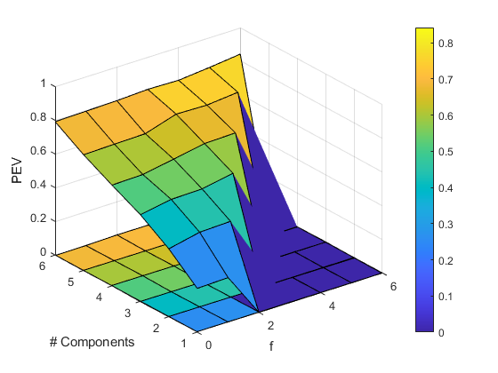
Select ridge penalty: 0
f=plotVec(PEVpq(6,:,2,2,2,2,2,2)); legend('off') ylabel('PEV') xlabel('Ridge') a=get(f,'Children'); set(a,'XTickLabel',ridge); saveas(gcf,'Figures/ridge'); saveas(gcf,'Figures/ridge.eps','epsc');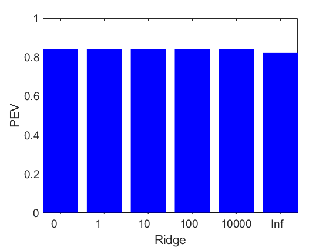
Visualize multi-model selected with 6 components with two non-zero weights each.
p = spca_zouhastie([], XX, 6, 0, -2); [u,s,v]=svd(XX*p,0); q=u*v'; r = q*inv(p'*q); for i=pcs plotVec(-p(:,i),'XYLabel',{'Variables','Sparse weights (p)'}); axis([.5 13.5 -1 1]) saveas(gcf,sprintf('Figures/p%d',i)); saveas(gcf,sprintf('Figures/p%d.eps',i),'epsc'); plotVec(-q(:,i),'XYLabel',{'Variables','Loadings (q)'}); axis([.5 13.5 -1 1]) saveas(gcf,sprintf('Figures/q%d',i)); saveas(gcf,sprintf('Figures/q%d.eps',i),'epsc'); f = plotMap([r(:,i)*p(:,i)'*X'*X*p(:,i)*r(:,i)']); ylabel('Variables','Fontsize',16) xlabel('Variables','Fontsize',16) saveas(gcf,sprintf('Figures/map2_%d',i)); saveas(gcf,sprintf('Figures/map2_%d.eps',i),'epsc'); end f = plotMap([r*p'*X'*X*p*r'],'VarsLabel',var_l); a = get(f,'Children'); set(a(2),'XTickLabelRotation',45); saveas(gcf,'Figures/map2_total'); saveas(gcf,'Figures/map2_total.eps','epsc');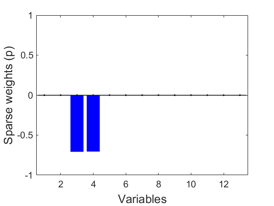 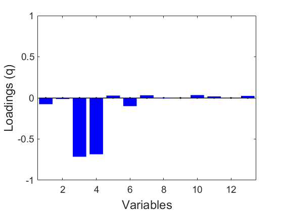 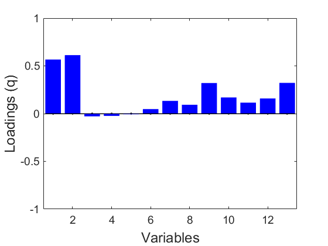 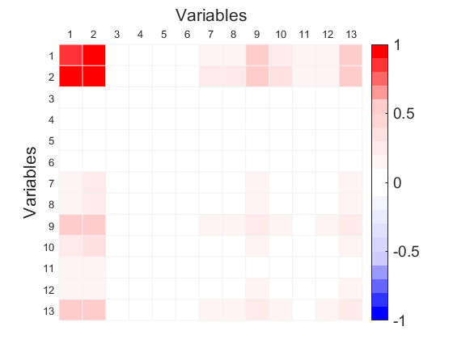 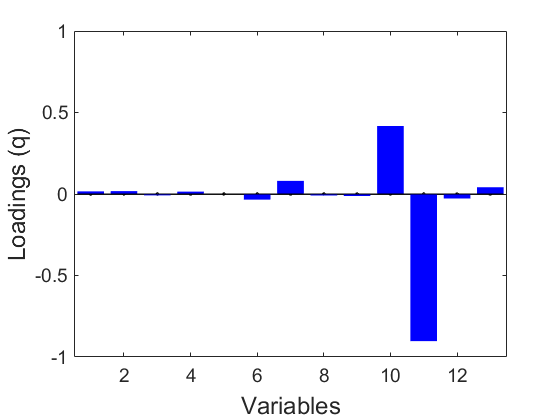 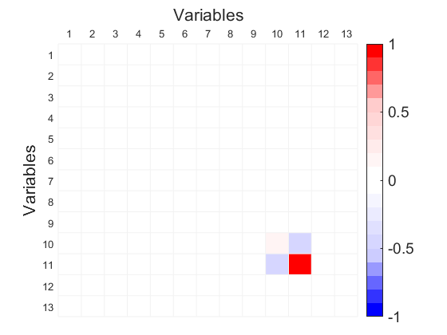 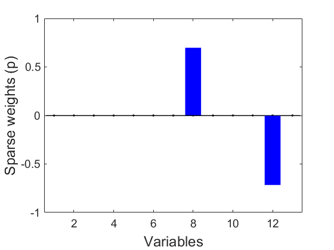 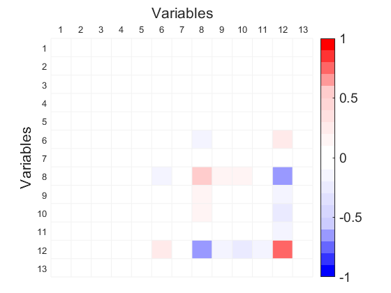 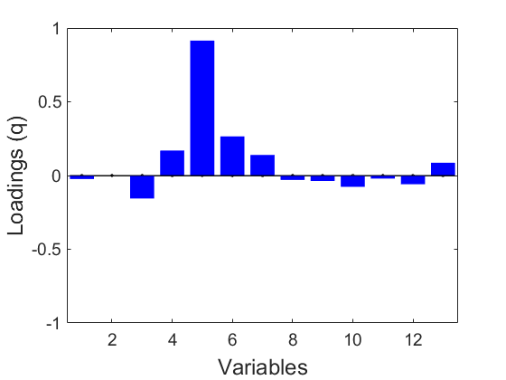